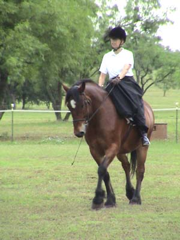

Dressage Show on
Thuy - Sidesaddle Well, quite a nice show
day. Both of my horses were in the ribbons for every
class, and all our scores
stayed in the 60s. In Training 1 and 2, Thuy
and I got a 65% and a 63%.
We also got instruction on what to work on (more
energy and bend and keep
his haunches from drifting to the right).
Video
1Video2 These videos take a while
to download. They work best with faster internet connections.
It can work better to right
click and 'save target as' to a location on your hard drive, then play
it off your hard drive.
It usually plays and looks
better.
Warming up he was more forward than
in the ring. In the ring I accepted the slower trot, since we'd been working
on not being so rushy.
All over the test, the judge had marked
obedient. Thuy was very attentive, I just have to improve my feel and communication.
One of our more forward moments.
I know the judge said we needed more
bend, but I was very pleased with how Thuy did.
We got a Third and Fourth. I was surprised
we did that well after watching the other riders.
We got an 8 on one of our canter circles.
Going in, one of my goals was just to get the correct leads...

The evening before, at dinner, my
fortune cookie said that 'You love the showmanship and display'. I tried
to remember that while I was showing.